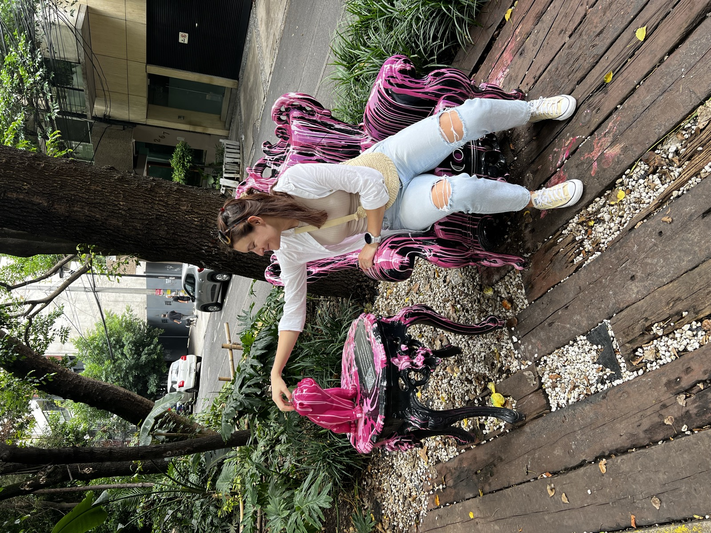
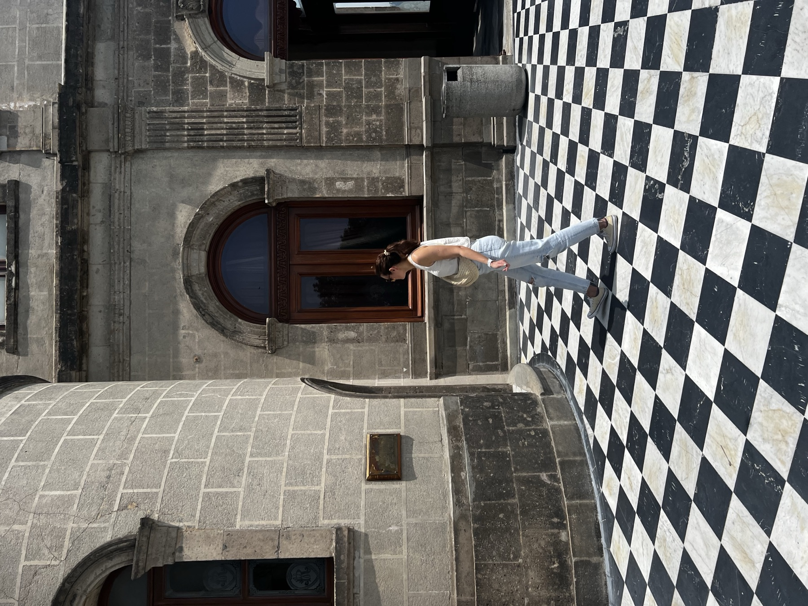
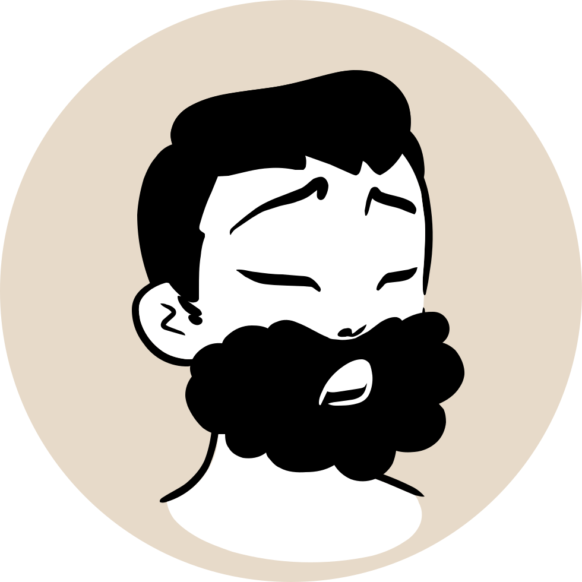
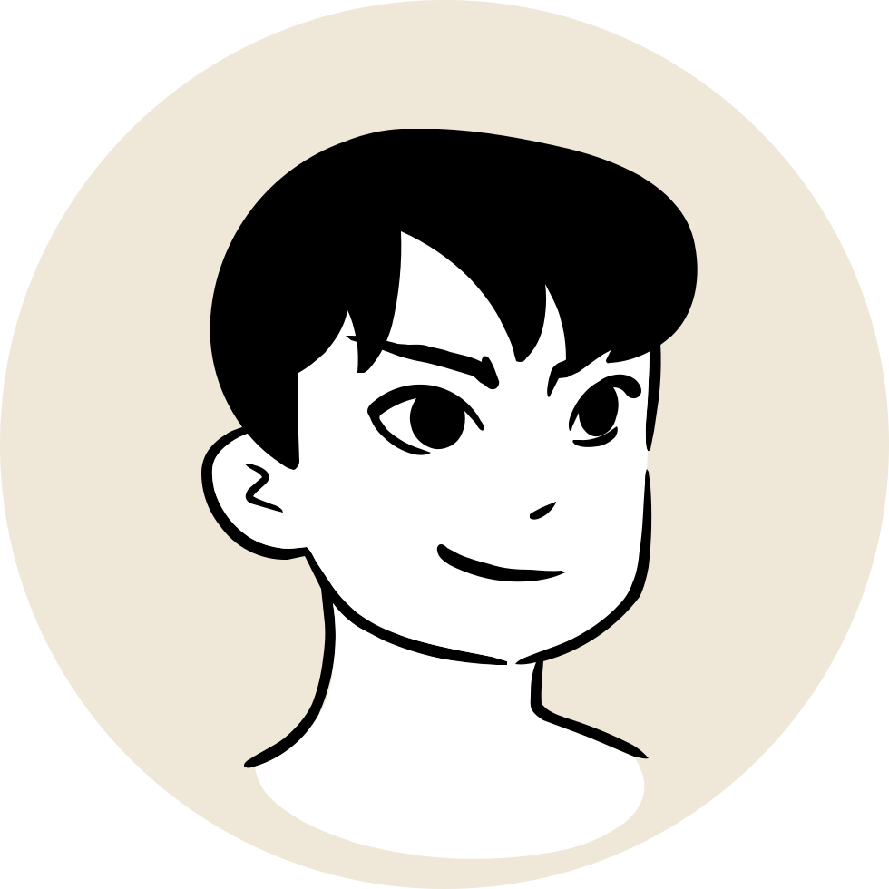
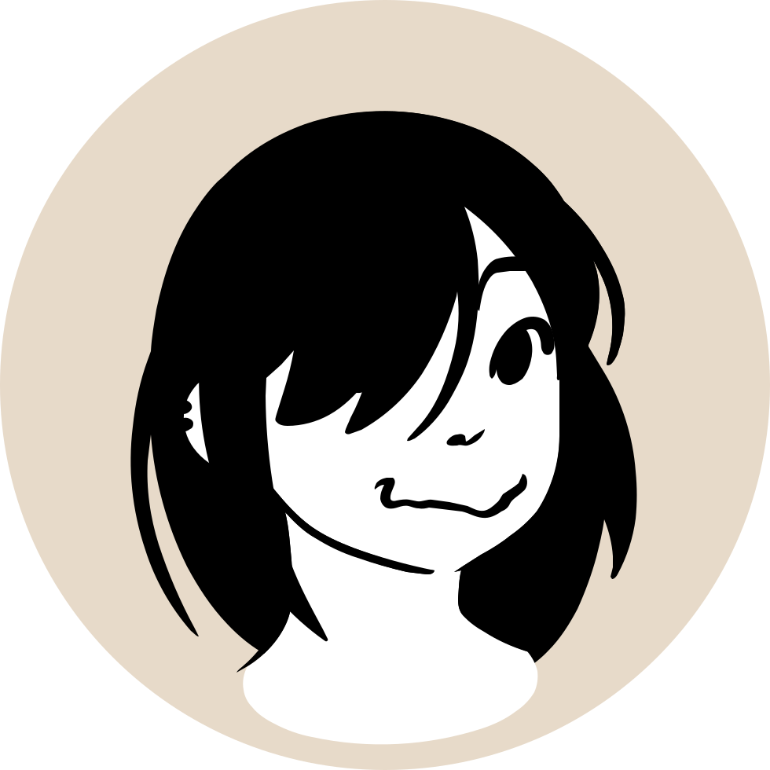

Nervous-system work and Human Design, together, so the body can feel safe enough to live the way it was always meant to.
Begin here
Your nervous system is not a problem to fix. Somatic work goes bottom-up, through sensation and breath, until the body feels safe enough to soften. You cannot think your way to calm. The body has to feel it.

Human Design maps your energy, your decisions, and your natural way of moving. Not a personality label. A language for how you're actually built.
Together, they turn understanding into something you live, not another idea to hold but a truth you can feel.
Book a discovery callYour patterns are not flaws. They are the accumulated logic of survival, what your body learned to keep you safe. Regulation is the doorway, not the destination: when the system feels safe enough, it can move, connect, create, and live fully again.
A short quiz to name the survival pattern running underneath: fight, flight, freeze, or fawn. A gentle first glimpse of where the work begins.
Two minutes to name it. Nothing to prove.
Take the quiz →One-to-one work with the body as guide. For women who are functioning but feel stuck, disconnected, or exhausted by coping. 3 or 6-month arc.
See details →Movement, breath, and nervous system awareness, together. Classes designed to help the body release survival patterns through sensation rather than effort.
Learn more →One of the tools I actually use to find the somatic block underneath a pattern. A map of your energetic architecture, not a personality quiz.
See details →A Skool community for women learning to regulate. Somatic practices, nervous system tools, and a space to show up as you actually are.
Join the community →
I never experienced something like this. I actually never credited the power of feelings or somatic work. Things become clear with Clara. It opened a portal to feelings in a very subtle way, which I didn't know was there.— Myke P., somatic coaching client

I would highly recommend Clara and somatic coaching as an easy way to stay grounded and build self trust when feeling emotions.— Fontanna W.

This video was recommended to me and I was surprised it had so few views. I clicked and I'm so glad I did. I'm going through a hard time and this really helped me.— YouTube viewer
A complimentary 30-minute call. We'll sense into where you are and whether this work is a fit, with no pressure to perform or commit.
Somatic work starts from one idea: experience needs the body and the mind together. The body feels: a held breath, a locked jaw, a stomach that won't settle. The mind interprets, and without it, none of that becomes a decision. Most people are cut off in one of two directions: thinking straight past what the body is saying, or a body so loud it stopped being trustworthy.
Attention is the skill in between: the thing that lets you actually hear what the body's saying instead of drowning it out. Somatic yoga, somatic coaching, Human Design: they're all tools for turning the light back on.
Somatic yoga is a body-led practice that combines yoga movement with nervous system awareness. Unlike conventional yoga, which focuses on physical form and flexibility, somatic yoga works with sensation, breath, and body awareness to help the nervous system release stored stress patterns. It is grounded in polyvagal theory: the science of how the nervous system regulates states of safety, threat, and connection.
Somatic coaching is an educational and experiential practice, not clinical therapy. It works with body sensations and survival patterns to support nervous system regulation and self-awareness. Clara Louis is a somatic practitioner and yoga teacher, not a licensed therapist. For clinical mental health support, a qualified therapist is recommended.
Many people who come to somatic work are not in crisis. They are functioning, but feel disconnected, exhausted, or stuck in the same patterns despite knowing better. Somatic practice addresses the body's survival states at a physiological level, offering tools for regulation that work when mindset approaches haven't landed.
Clara works with clients online and in London, UK. Options range from free somatic audio practices to one-to-one somatic coaching.
Last updated: July 2026 · What is somatic yoga? Read the full guide →